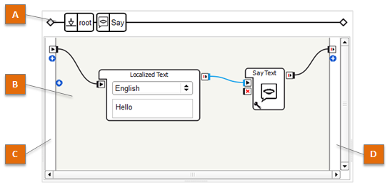
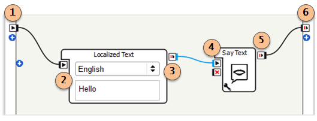
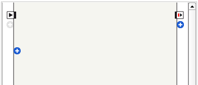
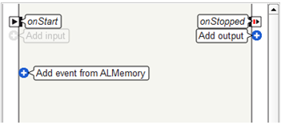
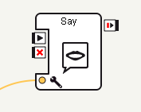
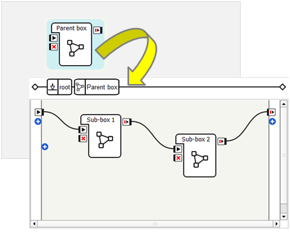
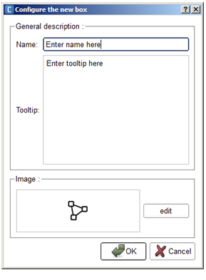
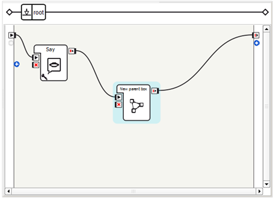
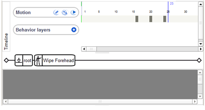

Flow diagram Panel¶
What is the Flow diagram panel¶
The Flow diagram panel is the place where you can compose NAO’s Behaviors.
The table below describes the main parts of the Flow diagram panel:
| Part | Name | Allows you to ... |
|---|---|---|
| A | Box path | Browse the different levels of the Flow diagram (when a box contains other boxes). For further details, see How to navigate in a multilevel diagram. |
| B | Flow diagram | Create or edit the Flow diagram of the current Behavior or Box. For further details, see How to create a Flow diagram. |
| C | Input border | Add, edit or delete inputs of the current Behavior or Box. For further details, see Managing Flow diagram inputs and outputs. |
| D | Output border | Add, edit or delete outputs of the current Behavior or Box. For further details, see Managing Flow diagram inputs and outputs. |
What is a Flow diagram¶
A Flow diagram is a group of boxes linked with each other and linked with at least an input.
Flow diagram can be seen at the first level of a Behavior. It can also be embedded in a Box, itself included in a Flow diagram.
In the example above, from the left to the right:
- the main onStart input of the Flow diagram (1) is linked to the onStart input of Localized Text box (2);
- the onStopped output of Localized Text box (3) is linked to the onStart input of Say Text box (4);
- the onStopped output of Say Text box (5) is linked to the main onStopped output of the Flow diagram (6).
How to create a Flow diagram¶
To create a Flow diagram:
| Step | Action | For further details, see ... |
|---|---|---|
| Create a new Behavior or a new Flow diagram box. | ||
| Add or create boxes. | How to add boxes to a Flow diagram | |
| Connect the boxes. | How to create links |
How to add boxes to a Flow diagram¶
To add a box to the current Flow diagram:
- Drag and drop a ready made box from the Box libraries panel.
Once you become familiar with Choregraphe, you will be also able to create your own new boxes.
To create:
- a new box grouping existing ones, see How to group several boxes into a single one.
- a new box from scratch, see How to create a box.
How to create links¶
To create a link:
Drag the mouse between the two points you want to link.
For example, drag the mouse from the
 onStopped
output of a box to the
onStopped
output of a box to the  onStart input of another box.
onStart input of another box.This link carries a simple event, activating a box when the previous one has done its execution.
Once you become familiar with Choregraphe, you will be also able to create links carrying data.
For further details, see How to create links carrying data.
The Flow diagram Editor¶
Managing Flow diagram inputs and outputs¶
Buttons appear on the Input and Output borders of the Flow diagram:
To display their names, hold down Shift-Control:
To add an input or an output to the Flow diagram:
Click one of the plus (+) buttons, or
Right-click the Input border or the Output border, and choose the relevant command:
Command
Description
Add input
Add an input to the current Flow diagram.
Add event from ALMemory
Add an event from ALMemory to the current Flow diagram.
For further details, see the tutorial: Creating a box to retrieve right bumper value using ALMemory.
Add output
Add an output to the current Flow diagram.
To edit or delete an input or an output:
Right-click the input or the output and choose the relevant command:
Command
Description
Edit input/output
Displays the Input, and output edition widgets.
Delete input/output
Delete the selected input or output.
Managing boxes¶
The table below summarizes the commands allowing to manage boxes inside a Flow diagram.
| To ... | Action |
|---|---|
| Select several boxes | Drag the mouse so that the square drawn by your mouse includes the boxes you want to select. |
| Cut, Copy or Paste one or several box(es) | Right-click it and choose Cut, Copy or Paste. |
| Select all the boxes of a diagram | Right-click anywhere on the diagram and choose Select All. |
| Zoom in or out the diagram | Right-click anywhere on the Flow diagram, choose Zoom and then the zoom level you want. By default the auto-zoom is set so that you can see as many boxes as possible within the Flow diagram panel. |
| Create a new bow from scratch | Right-click the box and choose Add a new box. For further details, see How to create a box. |
| Store a box in a box library | Right-click the box and choose Add to library. |
| Group several boxes into a single one | Right-click the box and choose Convert to box. For further details, see How to group several boxes into a single one. |
| Delete the selected box(es) | Right-click one of them or the background and choose Delete selection. |
| Edit a box and its properties | Right-click the box and choose Edit box. The Box Edition widget appears. |
| Edit the Script of a box | Right-click the box and choose Edit box script. The Script editor panel appears. |
| Edit the Resource of a box | Right-click the box and choose Edit resources. This action opens the Box resource selector. |
| Set the value of the parameters of a box | Click the Right-click the box and choose Set Parameters. The Widget to set the value of box parameters appears. |
 parameter button of the
box or
parameter button of the
box orShortcuts to manage box inputs and outputs¶
The table below lists the shortcuts allowing to manage quickly inputs and outputs.
| To ... | Action |
|---|---|
| Add a new input (or output) to a box | Right-click one of the existing inputs (or outputs) and select Add input (or Add output). |
| Edit an existing input (or output) of a box | Right-click it and choose Edit. |
| Delete an existing input (or output) of a box | Right-click it and choose Delete. |
| Simulate a signal on an input (or an output) | Double-click the input (or the output). This action is only available while the behavior is running. If the event carries a data, then you will be asked to enter the data value you want to send through the input (or the output). |
These commands - except simulate a signal - are also available from the Box Edition widget.
How to create links carrying data¶
To create a link carrying data:
| Step | Action |
|---|---|
Drag the mouse from the output of the source box to the The window Connect link to a parameter appears. |
|
Choose the parameter which you want to change the value of. For instance, you can have a link that changes the speed of the text synthesis on the box Say:  |
Multilevel diagrams¶
What are parent box and child box (or sub-box)¶
The parent box of a box is the box which Flow diagram directly contains this other box.
A child box (or a sub-box) of an other box is then a box which is contained in the Flow diagram of this other box.
You can also say that a box is a parent box of another if it is its indirect parent (for example if it is the parent of its parent box or the parent of the parent of its parent box).
How to group several boxes into a single one¶
In order to have clear and organized diagram it is possible to gather several boxes into one, to do so:
| Step | Action |
|---|---|
Select all the boxes you want to gather, provided that they are linked together and also linked to the main Flow diagram. 
Note If the selected boxes are not linked to the main Flow diagram ( i.e. to another box which is not selected nor to the main inputs or outputs), the resulting box will have no input nor output. |
|
Right click the diagram and choose Convert to box in the context menu. The following window appears:  |
|
Complete the Name, Tooltip and Image fields, then click OK button. The new box replaces the selected boxes. It is a Flow diagram box. If you double click on the created box you will see that all the selected boxes are in it. |
Timeline box Flow diagrams¶
If the Timeline of the box has no Behavior layer, it has no Flow diagram and then the Flow Diagram panel is empty as shown below.
If it has at least one Behavior layer and one Behavior keyframe, the diagram of the selected Behavior keyframe is displayed.

Each Behavior keyframe has its own diagram. Each Behavior keyframe diagram has an onLoad input stimulated as soon as the diagram is loaded.